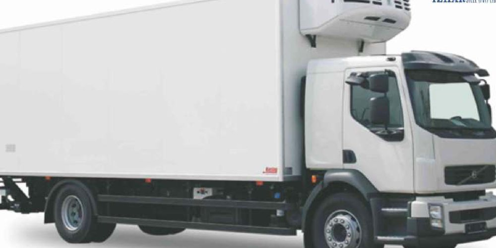

2026-08-15
Sizing a Refrigerated Truck for a +40 °C Summer
Zanotti quotes body volume against an ambient design temperature. Read the +30 °C column in a Multan summer and you buy roughly half the machine the job needs. How to read the tables properly.
Read article